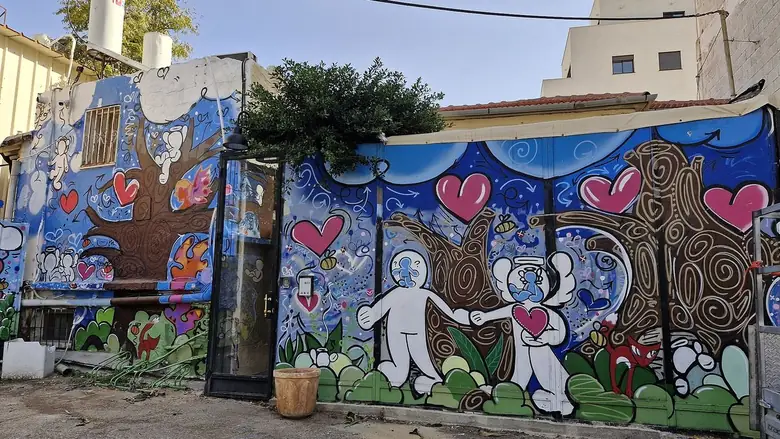
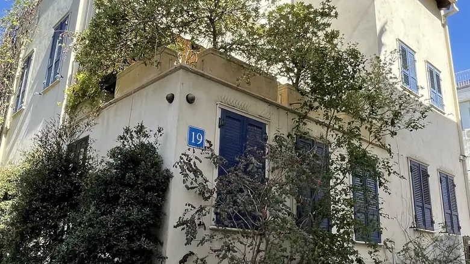

You’re staying in my home.
You have your own room; the kitchen, bathroom and living room are shared with me. Below is what I’d tell a friend on day one.
make yourself at home - and say hi! my market
my market
you’re in itWhere I’d send you first
on foot, from our door
10 min

Neve TzedekThe prettiest few streets in the city: low houses, bougainvillea, boutiques, ice cream.15 minOld JaffaClock tower, stone alleys, the artists’ quarter and the viewpoint over the bay.
15 minCarmel MarketThe big, loud, wonderful main market: fruit, halva, fresh juice, street food.
What I’d eat
straight from my own list
“Benny Briga’s tiny gazoz bar: soda with fruit syrup, herbs and flowers. No menu, just ask.”
Café Levinsky 41 · 3 min“My go-to ramen: tonkotsu with chashu and egg. No bookings, expect a queue.”
Koko Neko · 7 min“My pasta place. Order at the screen, grab a table on Park HaMesila. Try the vongole.”
Lava · 10 minThe flat, in short
the four things everyone asks
Hot water
A sun-heated tank on the roof. In the evening, switch it on 30–40 minutes before showering.
Water bar
Filtered cold and hot water. Hold the red button for hot.
Air con
Two remotes, three buttons each. 24–25°C is comfortable.
TV
Everything is signed in. Please don’t log out or add accounts.